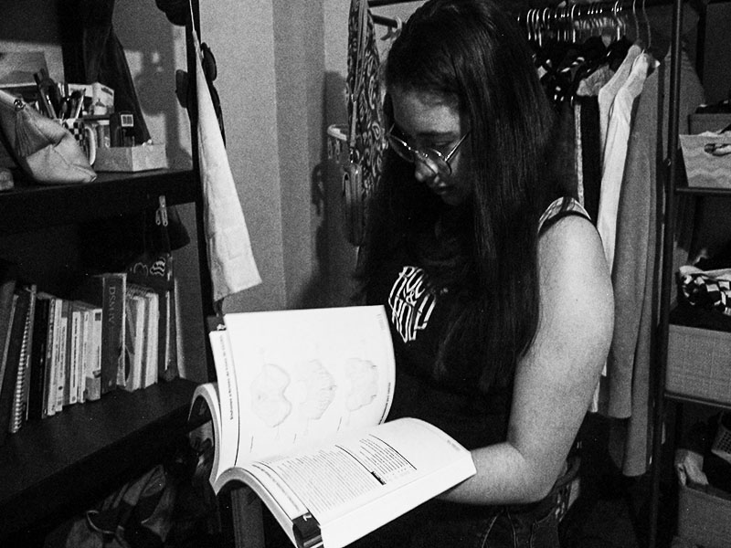

La adaptabilidad de lxs estudiantes el sentido de
habitar
el
espacio.
habitando las palabras.
Este proyecto es una narrativa humana creada para trasladarse a una página web hipertextual, un archivo multimedia interactivo que busca documentar un aspecto que nos parece muy importante como estudiantes profundizar: el de habitar el espacio privado de los estudiantes foráneos de la Universidad Autónoma Metropolitana, Unidad Lerma. A través de este espacio web, mostraremos elementos fotográficos, testimonios audiovisuales que nos ayudarán a develar la habitación del estudiante foráneo no sólo como un espacio más, sino como un espacio de resistencia emocional y creativa. Así, el funcionamiento de nuestra página web ayudará a darle una métrica a este sentido; ¿quiénes son estas personas afuera de la vida pública universitaria? ¿Cómo es su habitación? ¿Qué objetos la habitan? ¿Qué historias se cuentan en ella? ¿Qué emociones se viven en ella? Estas son algunas de las preguntas que nos guían a la hora de construir este espacio web, un espacio que busca ser un archivo abierto, un espacio de encuentro y diálogo entre estudiantes foráneos, pero también entre estudiantes foráneos y locales. En este sentido, el proyecto busca ser un espacio de resistencia emocional y creativa, un espacio donde se puedan compartir experiencias, emociones y reflexiones sobre el habitar el espacio privado como estudiantes foráneos.
